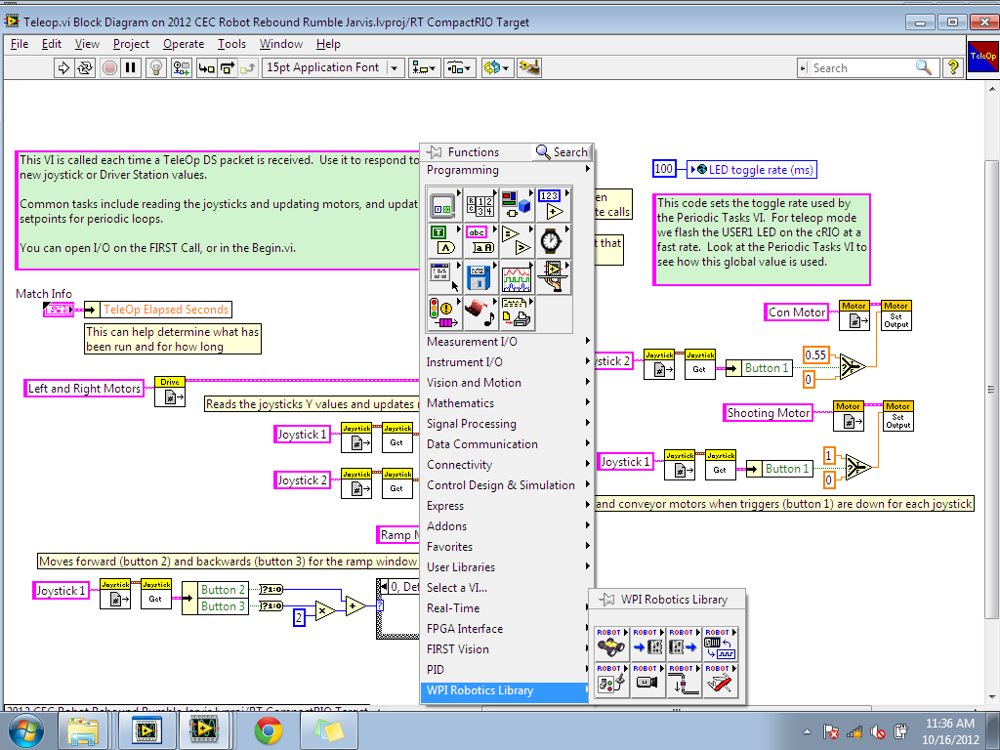
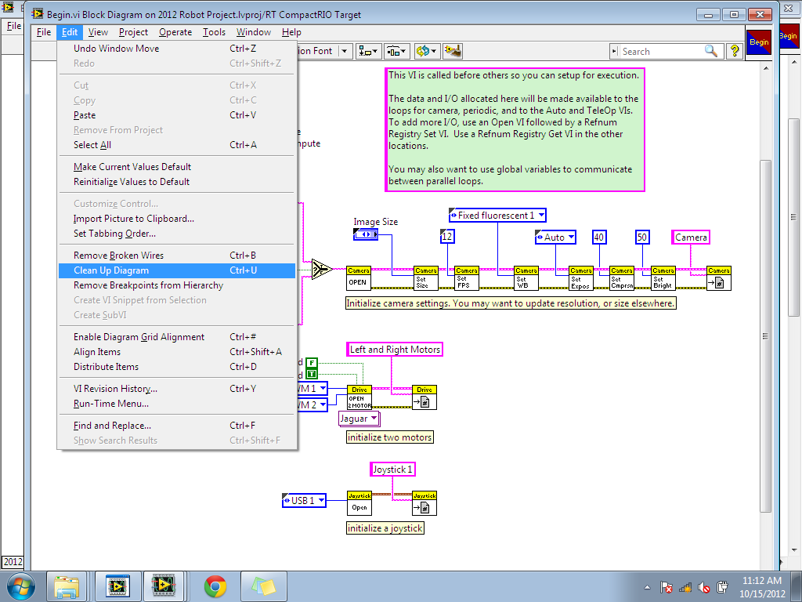
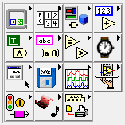

Understanding LabVIEW Environment
Before editing the VI files for your FRC robot, you must get a basic understanding the the LabVIEW workspace.
 The main window you will see is simply a panel showing all the files and folders of your LabVIEW project. To actually enter into the LabVIEW programs you must double-click one of the selected VI files shown in here:
The main window you will see is simply a panel showing all the files and folders of your LabVIEW project. To actually enter into the LabVIEW programs you must double-click one of the selected VI files shown in here:
One thing you should know is how to enter the Block Diagram of the VI. Simple click into one of the VI files and press CTRL + E, or navigate to Window >> Block Diagram on the upper left-hand window bar. Here is a screenshot:
{kind=link}
The Block Diagram is a visually depiction of LabVIEW code. This diagram is where you will be editing the VIs and programming the code for the robot.
Inside the Block Diagram, when you right-click on a blank area you will be presented with this window.
{kind=link}
This little window tablet will provide all the necessary functions for programming. Each loop, structure, library function, value, and variable can be found or created with the tools in this window. Remember, LabVIEW is a program that visualizes coding in similar fashion to wiring, so every bit of code will appear somewhat like logic gate visualizations.
The main library you should be concerned about is the WPI Robotics Library (as shown highlighted). This library will provide most of the assets (besides the pamphlet of generic functions/variables shown on the top) that will be involved in FRC LabVIEW programming. Inside, you will find declarations and definitions of motors, joysticks, and other various things specific to FRC.
Another thing you should also know is how to clean up your block diagram. It's not important to know this, but cleaning up the diagram can help you stay organized and will be really useful when working in a group. Simply press CTRL + U, or go to Edit >> Clean Up Diagram when you are inside the block diagram. Here is an example screenshot.
{kind=link}
What is this? I don't even...
Once you've entered the block diagram, there are are few things you should know about the appearances.
Constants will appear as blue or orange boxes,
Loops will appear as giant boxes where you can place other objects into,
Names/Identifiers will appear as pink boxes,
Parameters will appear as triangular or tan objects,
Motor-related functions will appear as orange squares,
Joystick-related functions will appear as yellow boxes,
Comments are in tan or green boxes,
and WatchDog or DriverStation related functions will appear as sky blue squares.